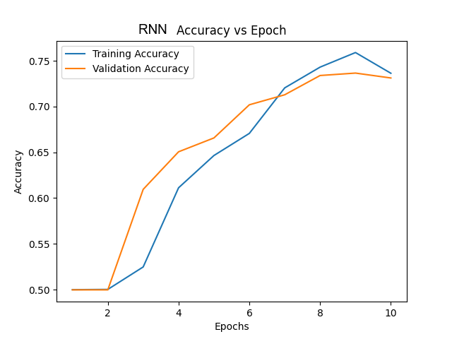

The problem
Telling whether a tweet is positive or negative sounds simple, but tweets are short and informal, full of slang, emoticons, sarcasm, and negation. For the group project of Georgia Tech’s Deep Learning course, four of us compared four kinds of model on this task, each student building one.
The data
We used Sentiment140, a public set of 1.6 million tweets labeled positive or negative, half of each. To fit our computing budget, a cloud machine with one A100 GPU, we drew a random sample of 100,000 tweets and split it 60/20/20 into training, validation, and test sets. The text was cleaned, and for most models stop words were removed and words reduced to their base forms.
The four models
- A baseline: Meta’s Llama 3 (8B Instruct), a large language model, prompted to label each tweet as positive or negative.
- BERT, a language model pre-trained on a large body of text, fine-tuned on our training tweets.
- A convolutional network that picks up short patterns of words.
- My model: a recurrent network that reads the tweet word by word in both directions, two layers deep, with an attention layer that weighs the words that say most about the label. I built it in PyTorch and trained it for ten epochs.
Results
BERT was the most accurate, 14 points above the baseline.
| Model | Accuracy on the test tweets |
|---|---|
| BERT, fine-tuned | 84% |
| Convolutional network | 75% |
| Llama 3, prompted (baseline) | 70% |
| Recurrent network with attention (mine) | 68% |
My network reached 73.7% on the validation tweets but 68% on the test tweets, the lowest of the four. A recurrent network passes what it has read along one word at a time, which makes context from far back in a sentence hard to keep, and its word representations are fixed. BERT looks at the whole tweet at once and gives each word a meaning that depends on the words around it.

Next steps
The team’s report suggests combining architectures, trying newer pre-trained models such as RoBERTa, and studying the tweets the models got wrong, for example to see how many of them are sarcastic.